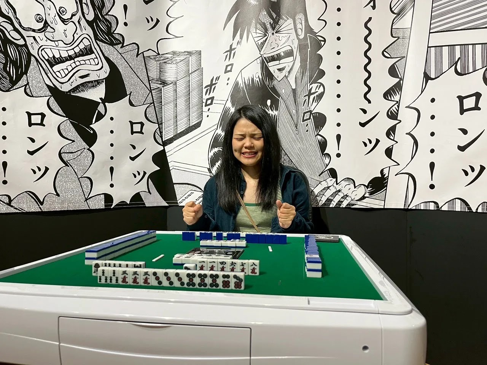
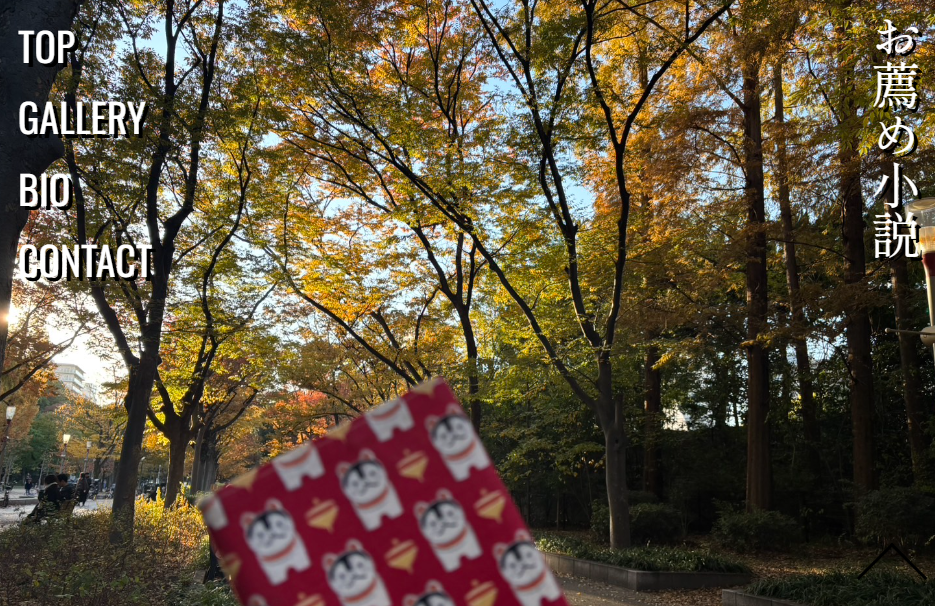

PORTFOLIO
PROFILE

三嶋寿恵と申します。
営業職として働きながらエンジニアを目指し、日々学習に取り組んでいます。
現在はTypeScriptを中心に、処理の流れや状態管理を意識した開発を進めています。
実務でシステムを利用する中で感じた課題意識をもとに、
ユーザー目線を大切にした開発ができるエンジニアを目指しています。
本ポートフォリオでは、これまでに制作した成果物を通し、
学習内容や工夫した点をご紹介させて頂きます。
PORTFOLIO
-

お薦め小説紹介サイト
★制作背景★ HTML/CSSの卒業課題として制作しました。題材が自由だったため、自身の趣味である読書の魅力を伝えるサイトを作りたいと考え、このテーマを選びました。
★概要★ HTML/CSSで作成したレスポンシブ対応のWebサイトです。本の紹介を目的としたサイトで、PC・スマートフォンのどちらでも見やすいレイアウトを意識しています。
★工夫した点★ ユーザーの視線の流れ（左から右への動き）を意識し、テキストやアニメーションが自然に視線誘導されるよう設計しました。また、見やすさを重視し余白のバランスにもこだわりました。
★苦労した点★ レスポンシブ対応において、画面サイズごとにレイアウトが崩れる問題があり苦労しました。特に画像やテキストの配置調整に試行錯誤し、メディアクエリを活用して対応しました。
★学んだこと★ レスポンシブ対応の基本や、見やすいレイアウトを作るための余白の取り方、視線誘導を意識したデザインの重要性を学びました。
-

電卓アプリ
★制作背景★ TypeScriptの中間課題として制作しました。四則演算の仕組みや入力制御など、基本的なロジックを理解することを目的として取り組みました。
★概要★ TypeScriptを用いて四則演算と入力制御を実装した電卓アプリです。ユーザーが直感的に操作できるよう、ボタン入力に応じた計算処理や表示の更新を行う仕組みを構築しました。
★工夫した点★ 入力制御に力を入れ、演算子の連続入力や小数点の重複入力が起きないように実装しました。また、計算処理と表示処理を分けることで、コードの見通しが良くなるように意識しました。
★苦労した点★ 小数点を含む計算や、足し算と掛け算が混在する連続計算において正しい結果が出ないことがあり苦労しました。処理の順序や状態の管理を見直しながら修正を行いました。
★学んだこと★ この課題で初めてクラスを用いた設計に取り組み、処理を分割することの重要性を学びました。また、計算ロジックを正しく組み立てる難しさと、状態管理の重要性を理解しました。